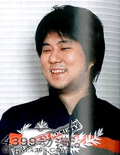

·姓名：尾田荣一郎
·性别：男
·出生日期：1975年1月1日
·出生地：日本熊本县熊本市
·职业：漫画家
|
漫画启蒙 尾田荣一郎于1975年1月1日出生于熊本县熊本市。在4岁时第一次知道这个世界上有漫画家这个职业，知道这是即使成为大人，也可以不用工作的职业。所以自此为目标而决心成为漫画家。正式开始尝试画漫画时在中学二年级，并且经常开始练习绘画。助手时期 担任甲斐谷忍的助手，协助绘画《翠山警察双子星》。德弘正也的助手，协助绘画《丛林之王小泰》《不文河童》。和月伸宏的助手，协助绘画《浪客剑心》。尾田荣一郎表示，自己在这三位漫画家手底下学了很多东西，不论是职业技能还是人生道理，都学会了很多，自己非常尊敬他们。漫画家之路 1992年，尾田荣一郎在就读东海大学付属第二高等学校时以“月火水木金土”（つきひみずきこんどう）的名义，在漫画杂志《周刊少年JUMP》投稿作品《WANTED！》，入选第44届手冢赏。1997年，创作了短篇海贼漫画《ROMANCE DAWN》。同年在漫画杂志《周刊少年Jump》第34号开始连载漫画《航海王》。2001年，创作了画集《ONE PIECE COLOR WALK 1》。2006年，与鸟山明一同创作了短篇漫画《Cross Epoch 鸟山明×尾田荣一郎》。2015年6月15日，尾田荣一郎创作的人气漫画《航海王》被认定为全球单一作者发行量最大的系列漫画，打破了吉尼斯世界纪录。从1997年到2014年年底，《航海王》在全世界累计发行了3亿2086万6000本（其中单纯在日本国内的发行量已经接近了3亿册）。2022年8月4日，日本集英社宣布，漫画《航海王》国内外累计发行量（不含电子版）已超过5.1亿册，其中海外发行量突破1亿册 。个人生活 在小时候尾田荣一郎就十分喜欢绘画，最喜欢的是迪士尼系列和《龙珠》等作品，而且他也是《龙珠》的狂热粉丝，深受那些喜欢的作品影响。1991年在九州东海大学工学部建筑学科就读。一年后退学，成为甲斐谷忍、德弘正也、和月伸宏等漫画家的助手。2004年11月7日与模特稻叶千秋（Inaba Chiaki）结婚。2007年9月至12月期间，尾田荣一郎收到了将近100条内容均为“死ね、死ね”的手机恐吓短信。而警方于2009年4月7日逮捕了27岁的嫌疑犯福重智子，其丈夫本是尾田事务所的一名工作人员，但之前却遭解雇，嫌疑犯本人并没有工作。警方怀疑她对尾田荣一郎心怀不满和怨恨，从而引发了作案动机。在某次访谈中，对外宣称：“等《ONE PIECE》连载完毕后，就不再开第二篇长篇连载。”2013年3月16日 《航海王》将在原预定18日发刊的《周刊少年JUMP》16号中休刊一期，JUMP官网上则是发布了作者尾田荣一郎因为生病的关系才休刊。人物评价 “评价尾田荣一郎和鸟山明的话，其实我是很不想卷入民众对他俩的论战啦，不过不得不说的是，我看待尾田时的心情就类似于手冢了。人们常说这个时代是ONE PIECE的漫画时代啊，说得非常正确。”——宫崎骏“我的孩子也是《ONE PIECE》的忠实粉丝，后来我自己也看，我终于明白为什么每个人都为《ONE PIECE》而疯狂！”——鸟山明“《航海王》刚刊载的时候我人在洛杉机，日本那边寄了JUMP过来，我记得当时读完第一话就有种‘啊，好久没看到过这样的作品了，又有一部经典作品要诞生了’的感觉。怎么说呢，就是认为自己不会看走眼。那样的漫画对我来说已经很久没遇过了，所以不厌其烦地看了好几次，《航海王》是日本的骄傲。”——井上雄彦获奖记录 2022-8-4,吉尼斯世界纪录·全球单一作者发行量最大的系列漫画。 2019-12，日本雅虎搜索大奖·创作者类。 |